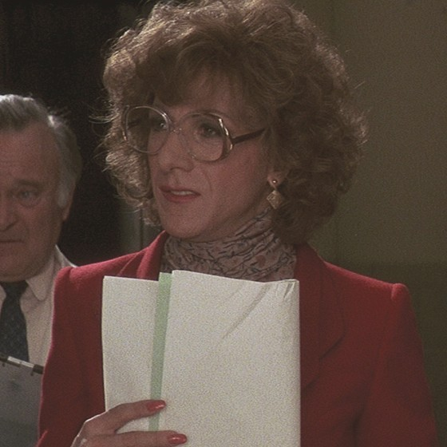

Southwest General
Production office
4th floor, ext. 412
Daily rehearsal and tape schedule
REVISED
Tape day
THURSDAY
Studio
2
Director
RON CARLISLE
Producer
RITA MARSHALL
The dayAll times are on the studio clock
7:00 AM
Makeup and hair, 3rd floor
8:00 AM
Dry rehearsal, Rehearsal Hall
10:30 AM
Camera blocking, Studio 2
12:30 PM
Lunch, Rehearsal Hall. Menu on back.
1:30 PM
Dress rehearsal, Studio 2
3:00 PM
Tape
Scenes
1
Nurses’ station
2
Emily Kimberly’s office
3
Corridor, 3 West
4
Emily Kimberly’s office
Cast called
Cast
Role
Makeup
Scenes
DOROTHY MICHAELS
Emily Kimberly
7:00
2, 4
JOHN VAN HORN
Dr. Brewster
7:30
2, 3
JULIE NICHOLS
7:15
1, 3
DAY PLAYERS (3)
Orderlies
9:30
1
Production notes
•Please tape the lines as written. R.C.
•Closed set during tape. No visitors on the floor.
•No coffee cups on the nurses’ station set.
•Wardrobe: red jacket back on the rack after sc. 4.
Revisions are issued on pink. Toss the white.
Form PO-7

Emily, red jacket
Tootsie
It’s Dorothy.